광은기도원과 명성수양관, 남해 바닷가에서 만난 눈 덮인 소나무와 시냇물, 갈대와 갈매기를 적은 시들입니다.
시마다 끝에 언제 어디서 썼는지를 적은 지은이의 메모를 그대로 두었고, 쓴 때를 따라 넷으로 나누었습니다.
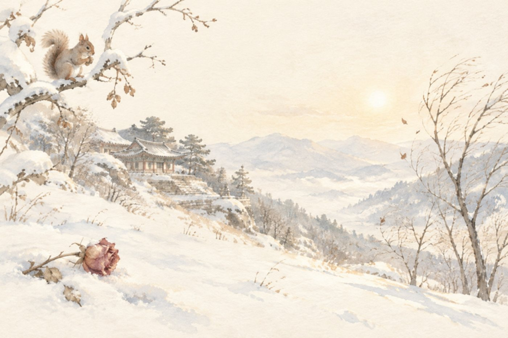
늦겨울
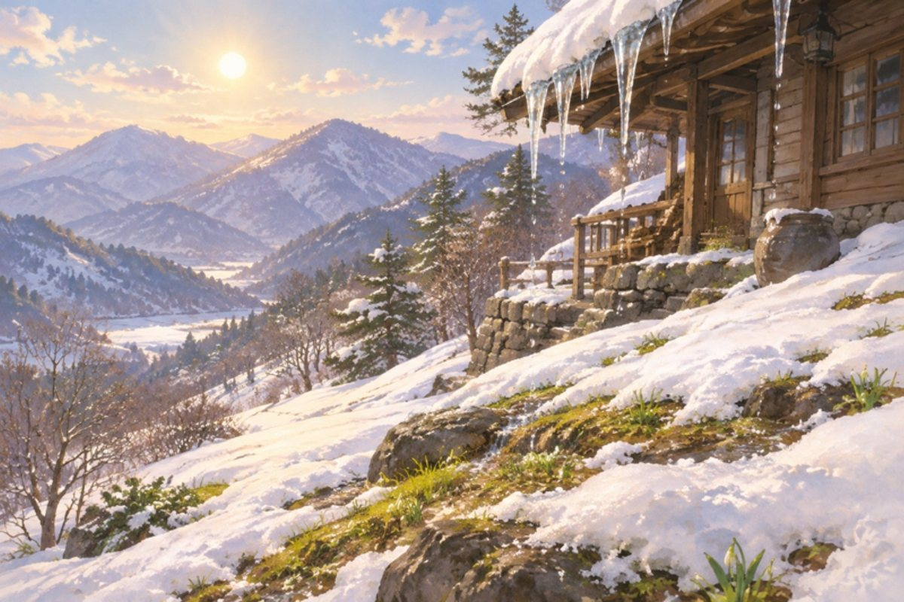
봄 볏
매서운 쇠사슬 한파 온 땅 얼음 따스한 바람 앞에 이내 굴복 언 땅 녹이는 훈풍이 약
토라진 아내 따스한 사랑의 말이 녹이고 냉혈한 남자 온수(溫手) 잡아 주면 사랑의 가슴 세상살이 비관 자포자기 인생 온화한 마음 다가가 안아주면 용기 실패한 젊은이 손잡고 힘내! 한 마디 격려의 말 이내 회복
세상을 이길 힘 비난, 비판 정의가 아니고 사람을 바꿀 길 책망, 질책, 지적도 아니니 사람을 살리는 길 그저 따사로운 사랑의 기도 세상을 살맛나게 하는 비결 오직 따스함 뿐이리 나는 오늘도 사랑의 온기를 세상에 불어본다
2013년 1월 23일(수) 광은기도원에서 기도원 산 기슭이 온풍으로 다 녹아 있는 모습을 보고 적어보았다.
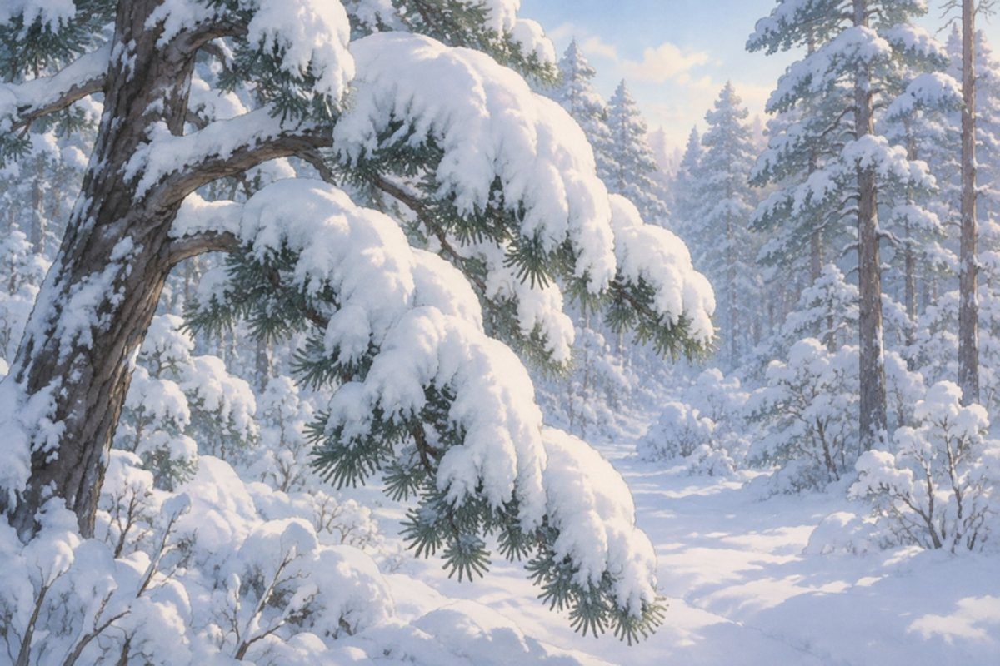
설 송(雪松)
밤사이 눈 손님이 왔다 아주 무거운 눈이 소나무 위에 내려앉고 또 내려앉았다 버거워하는 소나무에 포개졌다 가지는 땅을 딛고 버티고 있다 소나무는 눈 짐 보따리 내려 달라한다 애잔한 맘 내 손 채근하여 눈 짐을 내린다 짐 벗은 소나무 신난 듯 가지 돋세운다 공부 눌림 해방된 수험생 펄쩍 뛰듯 가지 춤 춘다 고마운 인사를 나누고 헤어 진다 멀어질수록 눈 초점 설송(雪松)으로 짐 벗고 파릇 침엽 자랑하는 가지는 지워지고 눈 짐 지고 버거워 신음하는 소나무 주목되니 폭설 다 어깨에 지고 버텨내는 송림은 풍경을 너머 절경 세상 짐 지고 가는 설송(雪松)은 가송(佳松)이리라
2013년 2월 6일(수) 광은기도원에서 함박눈을 맞고 힘겨워하는 소나무를 보면서 적어 보았다.
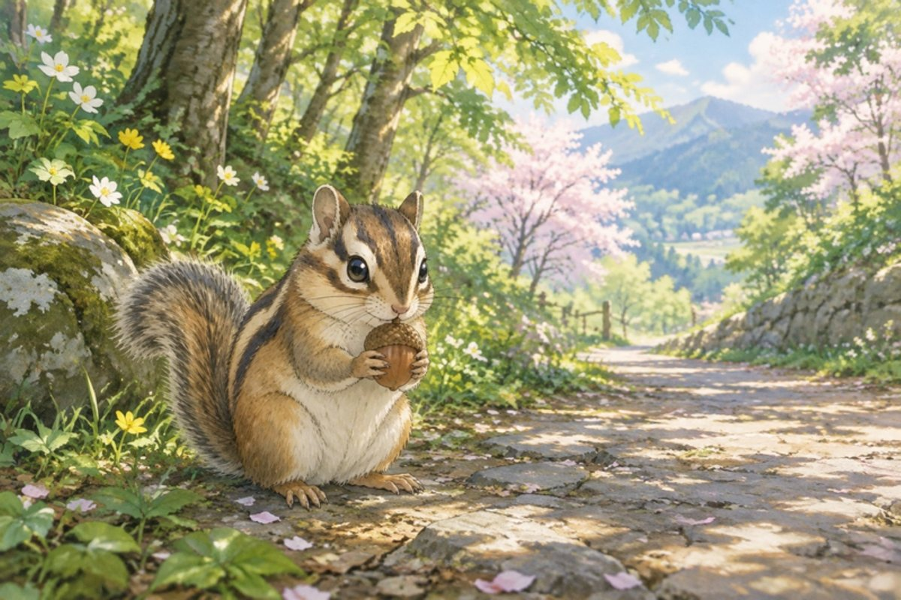
다람쥐
봄에 만난 다람쥐 인사도 제대로 못 나눈 사이 그 때 그 자리 오면 생각나는 귀염둥이 나에게 눈길도 안 준 도도녀 나의 짝사랑에 못 이기네
첩첩 눈 쌓인 산 어디에서 뭘 할까 추울텐데 먹이도 없을 텐데 혹한을 잘 이겨낼 수 있을까
봄 꽃피던 그 때 눈에 남은 다람쥐 그 곳에 오니 그 다람쥐가 그립다 이런 게 사는 것
2013년 2월 13일(수) 광은기도원 뒷길에서 봄에 본 다람쥐가 문득 생각이 나서 적어 보았다.
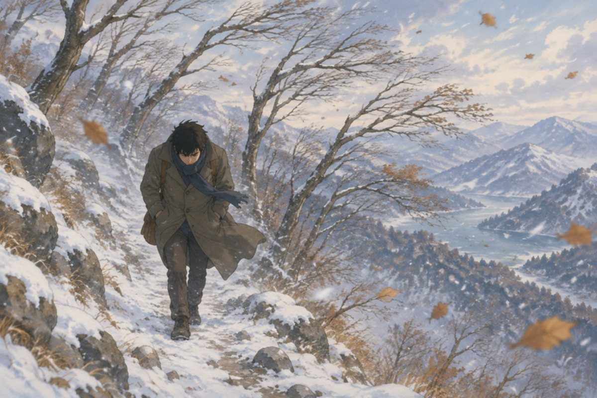
바람
바람이 나를 따라 옵니다 세차게 몰아 붙입니다
바람이 호통을 칩니다 무섭습니다
바람이 그물을 씌웁니다 주저 앉았습니다
바람이 속삭입니다 위로가 됩니다
바람이 나를 씻어줍니다 나쁜 생각을 몰아냅니다
바람이 내 속으로 들어왔습니다 시원합니다
‘바람’은 ‘바라는 마음’입니다
2013년 2월 15일(금) 광은기도원에서 뒷산을 산책 중 바람을 맞으며 적어보았다.
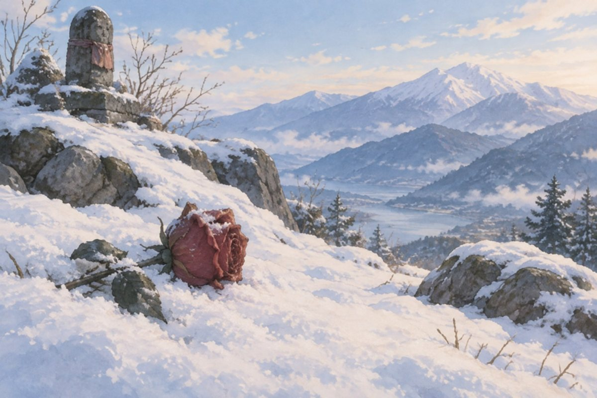
시든 장미
산 속 시든 장미 한 송이 눈 속에 숨어 있고 부끄러운 듯 어색한 듯 애잔하게 초로한 여인처럼 누워있네
사랑의 고백에 쓰였을까? 그 사랑 감격하여 깊숙한 입맞춤에 잊혀졌을까? 거부된 사랑에 실망하여 내던져 버려졌을까?
눈 위에 장미 버려지듯 사랑의 추억 지워버렸는가? 산 속 팽개치듯 젊은 사랑 보일러 창고에 쳐 박아 두었는가? 눈 위 붉은 장미 흙빛 되어 시들 듯 우리의 사랑은 퇴색되었는가?
산 속 가면 장미 시린 눈 위 놓였듯 첫 사랑 찾아 시간 여행 해볼까? 언 눈 위 장미 애처로운 아름다움이듯 사랑의 추억 녹이네
2013년 2월 15일(금) 광은기도원 자주 묵상하던 곳에 갔는데 그 곳에 눈 속에 묻혀진 시든 장미가 있어 그 장미를 보고 그 사연을 추적해 보았다.
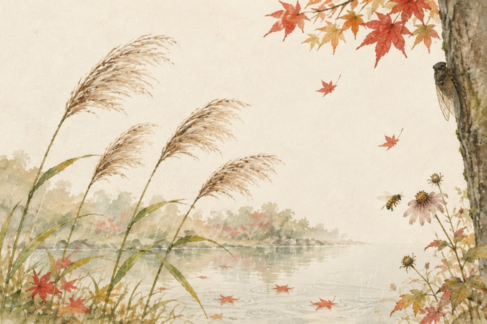
여름과 가을
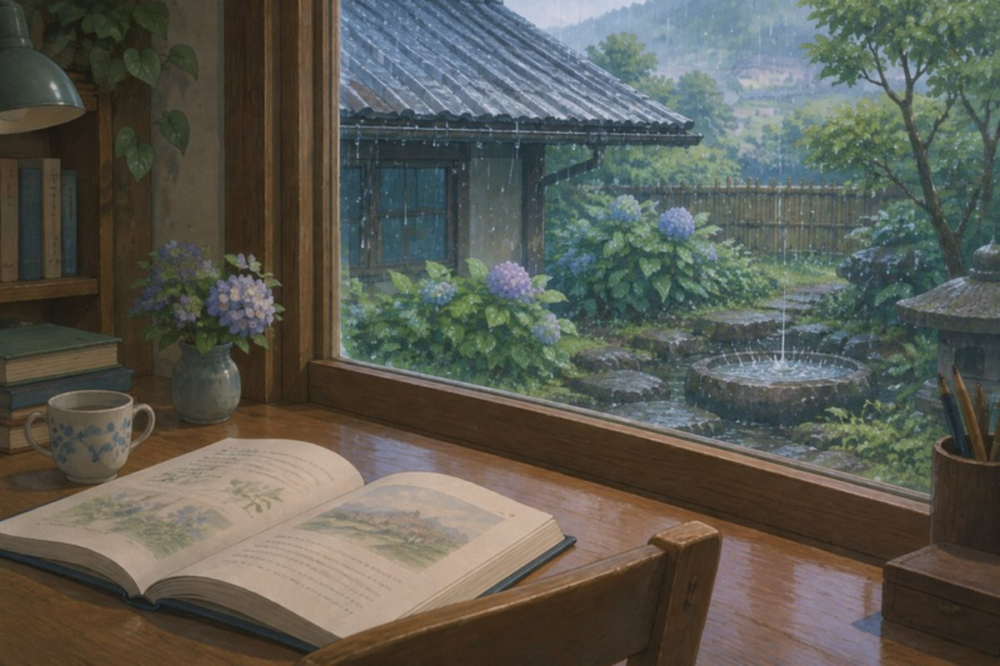
빗소리
창문 밖 소소한 비 들릴 듯 말 듯 얕은 비손님 빗방울 양철 지붕 노크 떨어진 비가 돌 부딛고 물방울 떨어져 비가 되고 빗방울 모아 물이 된다
때론 규칙적 부르는 듯 크고 작게 자기 알림의 몸부림 빠르게 늦게 짧게 길게 내리는 착지 한데 어우러진 소품 소리들의 아름다운 향연
그 소리 깨우고 어우러짐이 나의 흥을 돋고 소리의 진함이 살리고 영혼에 비집고 둥지를 튼다
2013년 6월 11일(화) 광은기도원에서 책 읽는 도중 빗소리가 들려 적어 보았다.
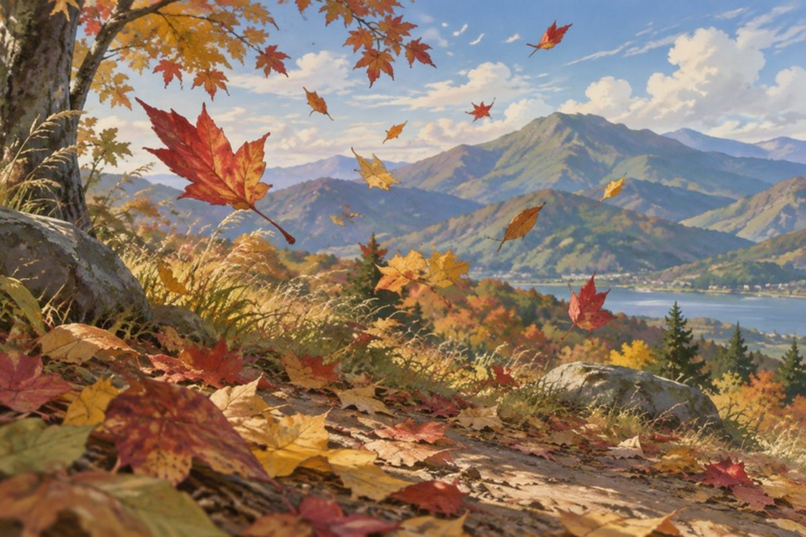
단풍(丹楓)
북풍(北風) 대낮 아직 열기 머금은 대지(大地) 중병(重病) 걸려 숨 떨어진 입새 좌충우돌 찬바람 몸뚱아리 멍투성이 시퍼런 맞은 자욱 주홍(朱紅)물감 들이니 어느새 몸 새 단장(丹粧) 남들은 날 보고 단풍(丹楓)이라네
스치는 쉼표 같은 말 한 마디 죽고 사는 심약(心弱)한 맘 누가 받아줄까 누가 안아줄까 상처(傷處)로 낙엽(落葉) 오색(五色) 빛 단풍
2013년 9월 11일(수) 아직도 한 낮 기온이 30도를 넘는데 이미 낙엽 되어 땅에 떨어진 발에 밟힌 나뭇잎 밟으며 적어 보았다.
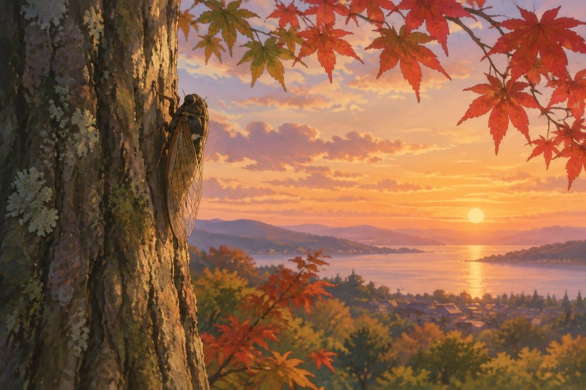
매미
초가을 한 풀 꺽인 매미의 울음 ‘나 오늘 밤이 마지막이라오’ ‘내 하소연 들어 주오’ 외치는 냥 운다
그냥 지나치면 나 섭섭하오 나를 좀 봐 주오 손잡아 끄는 매미 울음
이곳저곳 아우성에도 살기도 바쁜데 나도 살아야지 이내 외면하는 야속한 인생
2013년 9월 11일(수) 초가을 아직도 매미 소리가 들리는 것을 들으며 매미의 마음을 읽어 보았다.
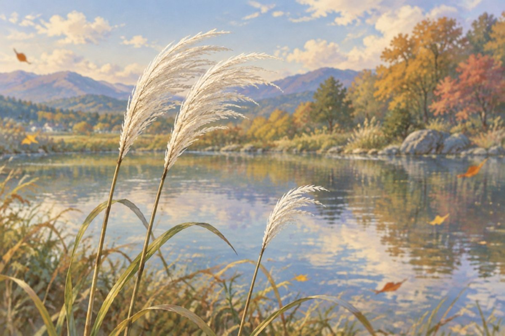
갈대 가족
서로 부비며 사랑 나누는 갈대 부부
한 켠 떨어져 삐쭉빼쭉 시샘하는 딸 갈대
너도 우리처럼 좋은 사람 만나 그래이 아랑곳 않는 푼수 부부
고개 어긋 맞겨 부비고 비비며 사랑 나눔 여념 없는 부부 갈대 바람 부니 더 좋다 사랑의 포옹 밀고 당기고 맞추고 떼고 행복한 갈대 부부
2013년 10월 16일(수) 광은기도원에서 갈대 세 개가 바람에 날리는 모습을 보고 적어 보았다.
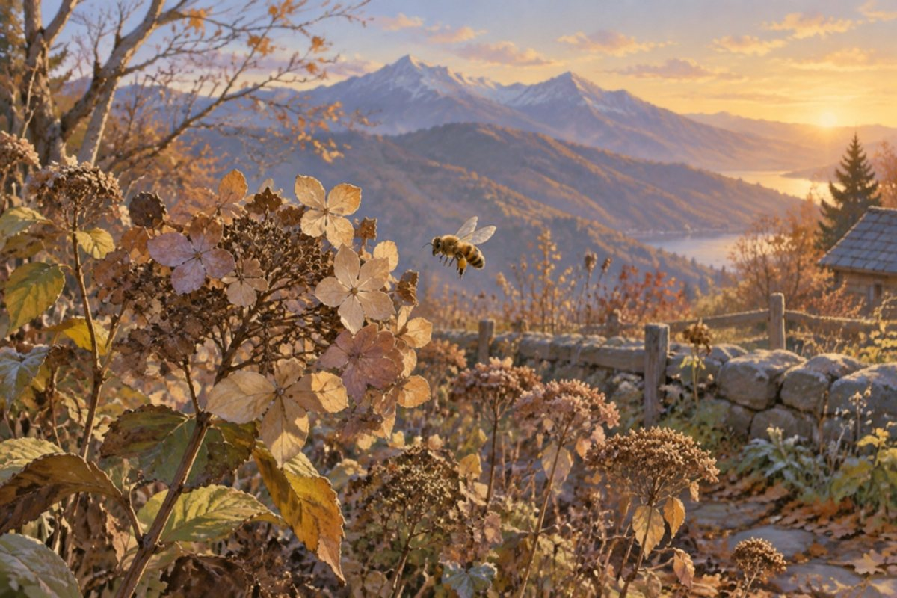
게으른 벌
게으른 벌 이제 나와 날개 짓 부지런히 이 늦은 가을 무슨 꽃을 찾을런가
2013년 10월 16일(수) 광은기도원에서 가을에 날아다니는 벌을 보면서 적어 보았다.
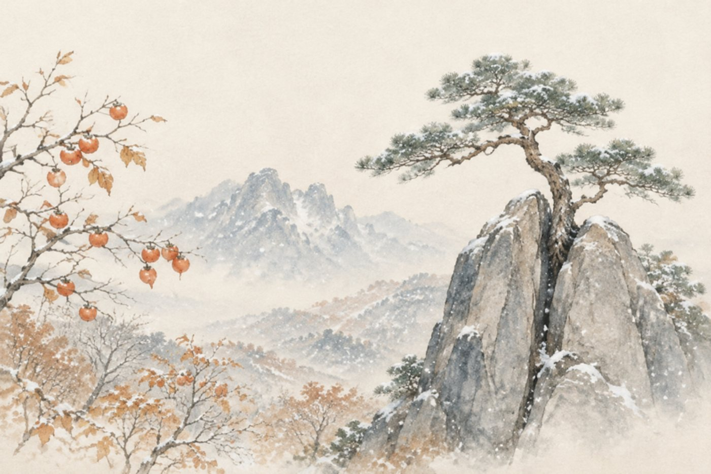
초겨울
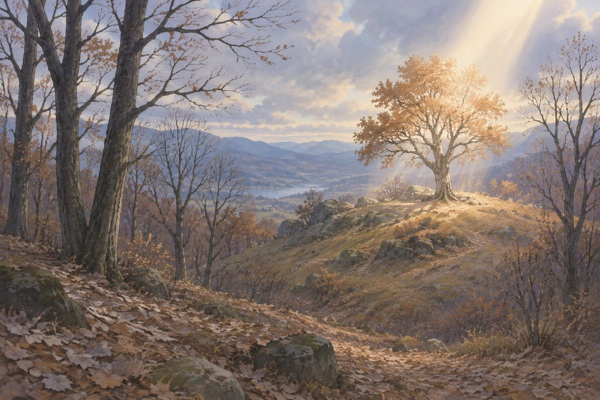
가을 나무
짓 푸름 옷 벗고 잿빛 낙엽 외투로 갈아입은 가을 나무 외출복 벗고 잠옷 입듯 그렇게나 빨리 산하가 준비를 하네 옷 한 벌 갈아입듯 섬광 비췸 받은 한 사람의 인생
2013년 12월 7일 가을 나무를 보고 적어 보았다.
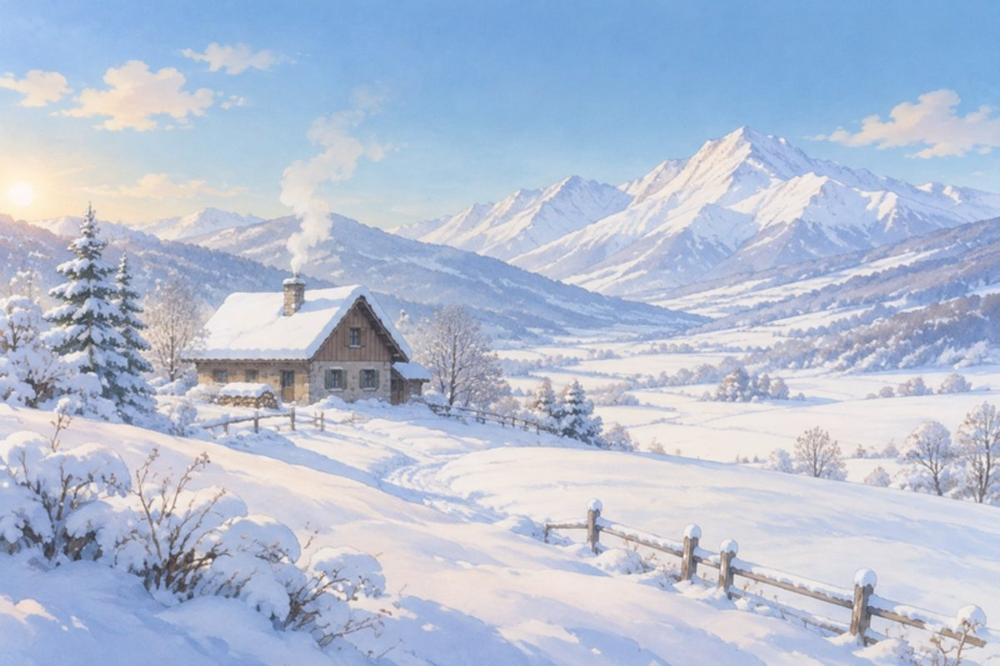
하얀 눈
지난 밤 흰 눈 소복 온 세상을 하얗게 산들 모두 어릴 적 도화지 눈은 왜 하얀색일까 덮어주려고 가려주려고 지우고 다시 시작하라고
하나님은 흰 눈을 주시네 새로 시작해 보라고 온기로 덥는다 추운 겨울 눈은 사랑의 위로
2013년 12월 13일(금) 광은 기도원에서 적어 보았다.
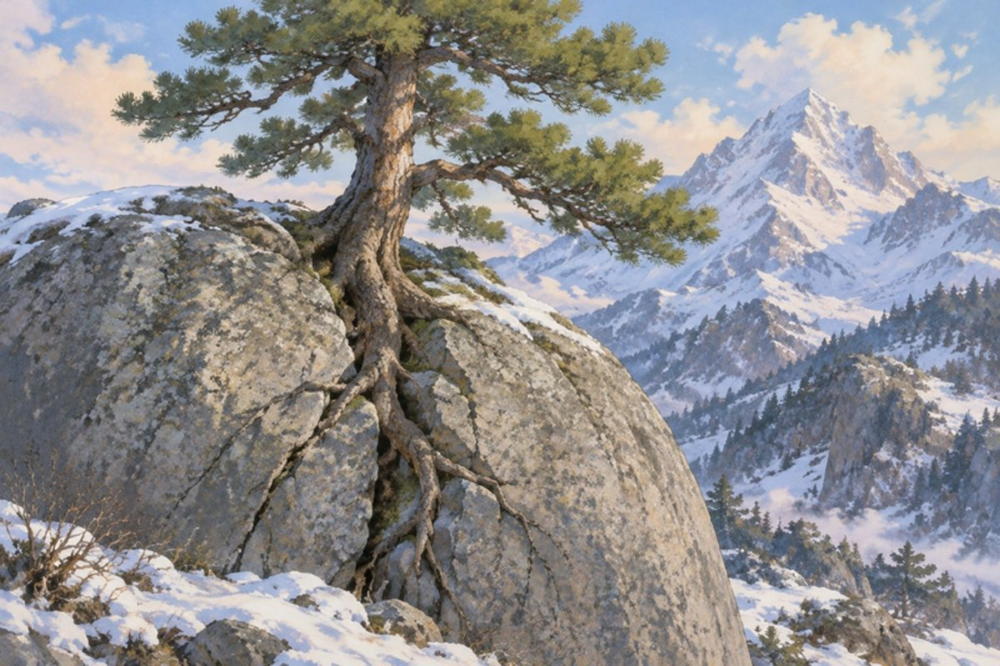
바위 가르기
바위에 소나무를 심자 바늘 틈도 없는 놈에 어찌 나무를 세월이 약이지 무진시간 돌이 흐트러지고 돌 위 먼지 쌓여 흙 되고 바위는 모자를 썼네 돌이 깨지고 먼지 쌓이고 흙 덮인 바위 머리로 날라 온 씨 한 톨
뿌리내리고 싹이 나니 나무 자라고 깊은 뿌리 자리 매김 키 큰 소나무 굵게 퍼진 뿌리 . . . . . 바위 가르네
2013년 12월 24일(화) 명성수양관에서 바위 위의 소나무를 보고 우리 마음도 나이가 들면 부드러워져 사람들을 품고 생명을 만드는 사람이 되고 싶은 마음에 적어 보았다.
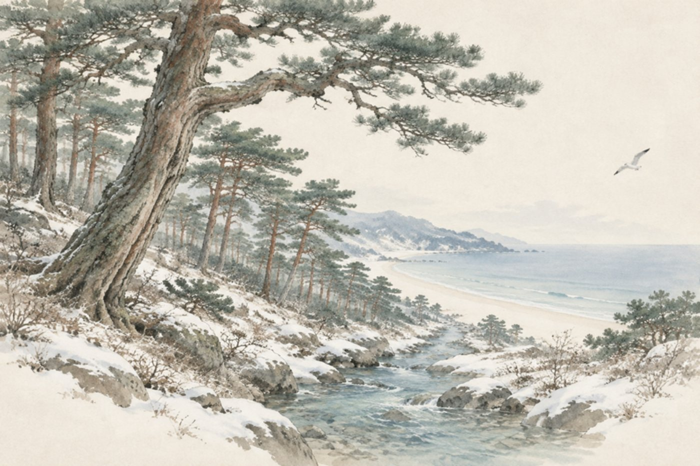
솔숲에서
시냇물
흐르는 물결의 출렁임 한 번은 급물살 때론 휘몰이 순간, 찰라마다 변화무쌍 다른 친구들과 잘도 미끄러지누나
언제부터인지 언제까지인지 영겁의 세월을 채워낸 시내
미끄러지듯 춤추는 냇물아 어디로 가니 무엇하러 가니 어디까지 갈거니 나에게 가르쳐주렴
나 누군지 몰라 친구 찾아 디딘 걸음 무얼 할지 어디 갈지
니 위에 종이배 띄워 너 가는 곳 나도 갈까 보다
바위, 나뭇잎, 아랑곳 않고 쉬임 없이 막힘 없이 막힌 담 개념치 않으리
오늘도 앞만 보고 막힌 돌, 짚, 가지 흔들림 없이 너와 함께 영겁의 세월 흐르리
2014년 1월 3일(금) 명성수양관 냇가에서 냇물이 흘러가는 모습을 보고 적어 보았다.
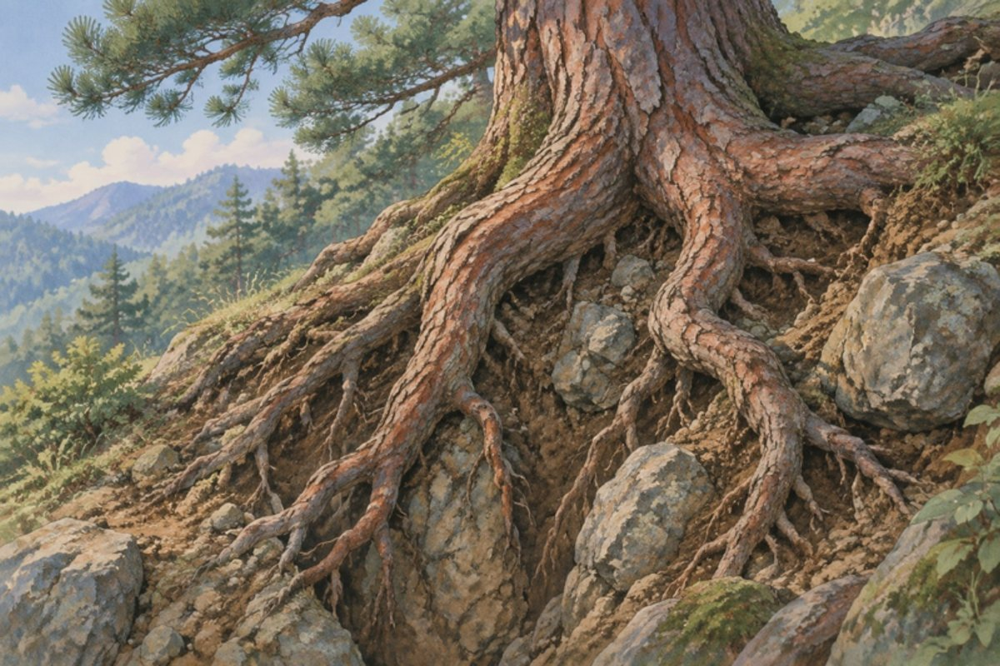
宮合
土, 흙 토 一(땅)에 十(나무) 심은 모양 赤松이 파고 들고 土의 처절한 항거
다가서면 뒷걸음질 달려오면 움찔 合一의 난제
뿌리 짓누름에 찢어지는 아픔 살갓 벌려 자기 포기
한 번으로 끝난 줄 알았건만 두 갈래, 세 갈래 천 갈래, 만 갈래 한도 끝도 없는 후벼 파임
내 몸 등대 삼아 우뚝 서소 그늘 아래 나 쉬겠소 그대 뿌리 내 몸 파고드니 塵土 흙 친구들 함께 어울리네 天地合一 이루네 生卽死 死卽生 天과 地의 宮合
2014년 1월 6일(월) 명성수양관에서 수도 없이 많은 나무들, 그 나무들이 흙에 뿌리를 수도 없이 깊이 많이 갈래 갈래 내리고 있는 것을 생각하며, 흙이 얼마나 아플까를 생각해 보았다.
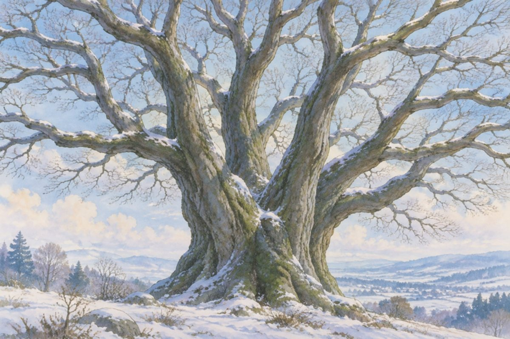
거목
외줄기 하나 솟더니만
살을 에고 나뉘고 갈리고
삭풍에 흔들리고 꺽이고 찢기고
동장군에 갖히고 놓이고 부서지고
태풍에 잘리고 뒹굴고 석이더니
어느 덧 거목되어 우뚝 솟구쳤구나
2014년 1월 6일(월) 명성수양관에서 나무들이 계속해서 갈라져 뻐쳐 있는 모습을 보고 적어 보았다.
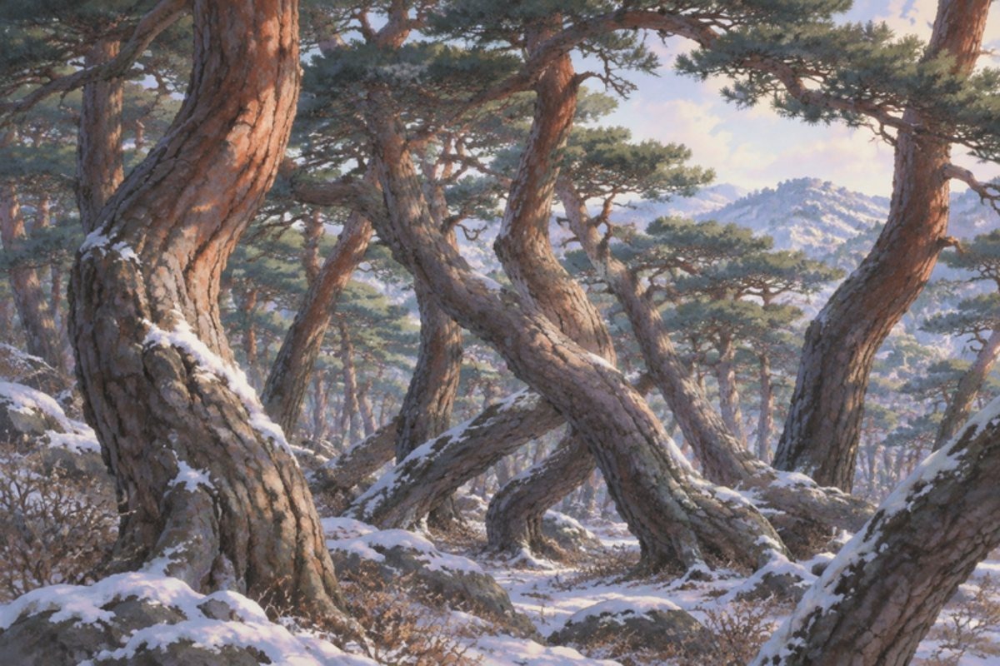
소나무 숲
앞서거니 뒤서거니 밀고 당기고 뽐내고 짓누르고 씨름선수 뒤엉키듯 뒤틀려 돌고 돌아 한 무더기 솔 밭 두 무덩 솔 내 세 언덕 솔 산 솔 나무 뒤태여 얽기 설기 거송의 멋 선뵈려 군웅할거 누구도 예측 못한 풍광 소나무 숲
2014년 1월 6일(월) 명성수양관에서 소나무 숲을 보면서 꾸불꾸불, 얼기설기 잘도 어우러져 있는 모습을 보면서 적어 보았다.
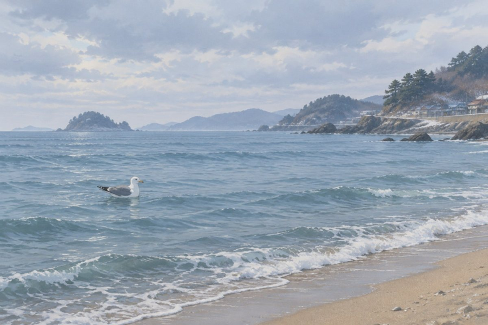
외갈매기
같이 해 주는 이 하나 없는 짝 잃은 외갈메기 고독에 지쳐 파도에 몸 맡기네 배고픔에 본능적 물길질 일상이 그를 살게 하지 못하고 육이 그들 삶의 모두인가?
지친 삶의 잠수와 부상 이리 저리 떠돌다 멀리 보이는 처량한 또 한 마리 외갈메기 쭈뼛 쭈뼛 머뭇 머뭇 힐끔 쳐다 보다 눈 마주쳐 눈가에 맺힌 슬픈 이슬 왈칵 반가움의 눈물되어 솟구치네
한 번 만 내 마음으로 봐주면 되었거늘 눈 속의 아픔을 봐야 했거늘 “너는 너, 나는 나”면 외갈메기 “너와 나”가 되면 갈메기들의 행복 한 무리의 행복한 외갈메기들
2014년 2월 27일(목) 남해 상그니펜션 송정해수욕장 모래밭에서 외갈메기 한 마리를 보고 지어 보았다.